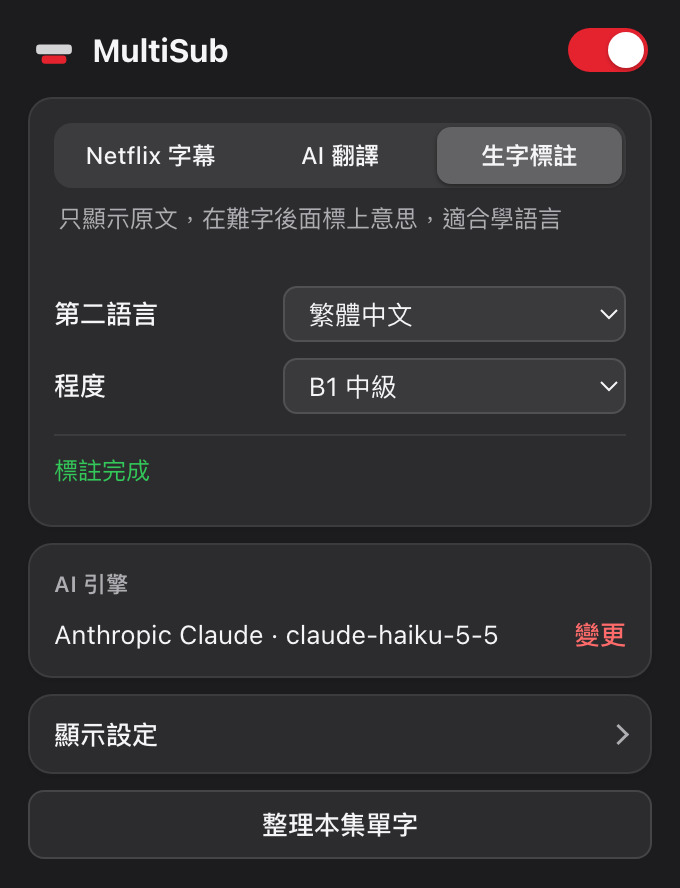
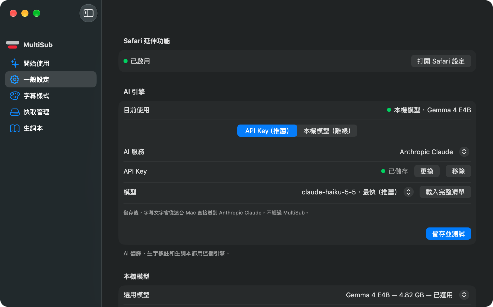

Netflix 雙語字幕
不用 AI直接疊上 Netflix 官方提供的第二語言字幕。兩種語言各照各的時間軸顯示，不會因為斷句不同而對不齊。Netflix 沒有你要的語言時，選單會建議改用 AI 翻譯。
macOS · Safari 延伸功能
在 Mac 的 Safari 看 Netflix 時，同時顯示兩種語言的字幕。可以直接疊上 Netflix 官方字幕、用 AI 翻譯，或只在難字後面標上意思。
Apple 晶片 · macOS 15 以上 · 免費開源（MIT）· Mac App Store 版審核中
Netflix 官方的第二語言字幕，不用設定 AI。
預設是 Netflix 雙語字幕，打開 Netflix 播放就有。想換模式，點 Safari 工具列的 MultiSub 圖示切換，選過就會記住。
直接疊上 Netflix 官方提供的第二語言字幕。兩種語言各照各的時間軸顯示，不會因為斷句不同而對不齊。Netflix 沒有你要的語言時，選單會建議改用 AI 翻譯。
由 AI 翻譯原文字幕，支援 12 種語言。人名和專有名詞會參考 Netflix 官方字幕，譯名跟官方一致，其他部分照口語重新翻。
只留原文字幕，依你設定的程度（A2 到 C1）在較難的單字和片語後面加上幾個字的意思。意思對照這一句的官方翻譯，同一個字一集最多標三次。
點 Safari 工具列的 MultiSub 圖示，就能切換模式、選第二語言和生字程度。字幕大小和位置在「顯示設定」裡調，畫面馬上更新。模式和語言在 App 和選單都能改，兩邊共用同一份設定。


在選單按「整理本集單字」，App 會在背景讀整集的英文字幕，挑出值得學的單字和片語，依 CEFR 分級整理。可以邊整理邊看，之後隨時回來複習。
字級、位置、顏色、外框、字型都能調，也能直接在影片上拖曳位置。
跳到後面時，AI 會先處理你正在看的段落。
處理過的集數會保存在 Mac 上，同一集再看一次直接顯示。
AI 翻譯、生字標註和整理生詞本需要一個 AI 引擎，在 MultiSub App 裡設定一次就好，兩種擇一。只用 Netflix 雙語字幕的話不用設定。
不用下載模型，速度最快。支援 Anthropic、OpenAI、OpenRouter 和 Google Gemini，也可以填任何 OpenAI 相容的網址，例如本機的 LM Studio 或 Ollama。預設用各家最快、最便宜的模型，想要更好的翻譯可以換成較大的模型。API Key 存在 macOS 鑰匙圈。
免費、完全離線，字幕不會離開你的 Mac。第一次使用要在 App 裡下載 Gemma 模型（約 3–5 GB），透過 Apple 的 MLX 在 Apple 晶片上執行，建議 16 GB 以上記憶體。

在 Mac 上，只有 Safari 能播放 Netflix 的最高畫質（最高 4K HDR）。Chrome 與 Firefox 受播放保護機制限制，畫質最高只到 720p。既然最好的畫質在 Safari，最好的雙語學習體驗也該在這裡，所以 MultiSub 只為 Safari 打造。
沒有帳號、不收集使用資料，開發者收不到你的任何資料。
其他連線：在 App 查看或下載本機模型時會連到 Hugging Face。從 GitHub 下載的版本會用 GitHub Releases 公開 API 檢查更新，App Store 版沒有這項連線。完整內容請看隱私權政策。